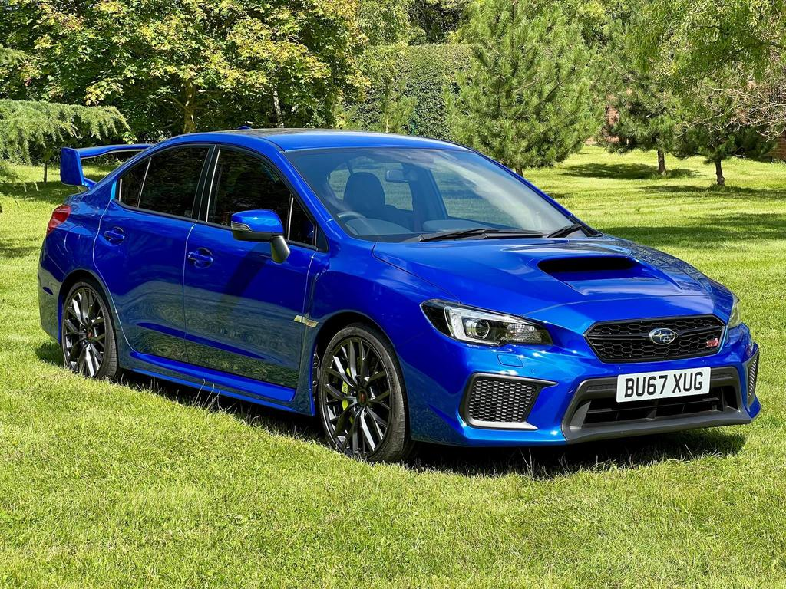
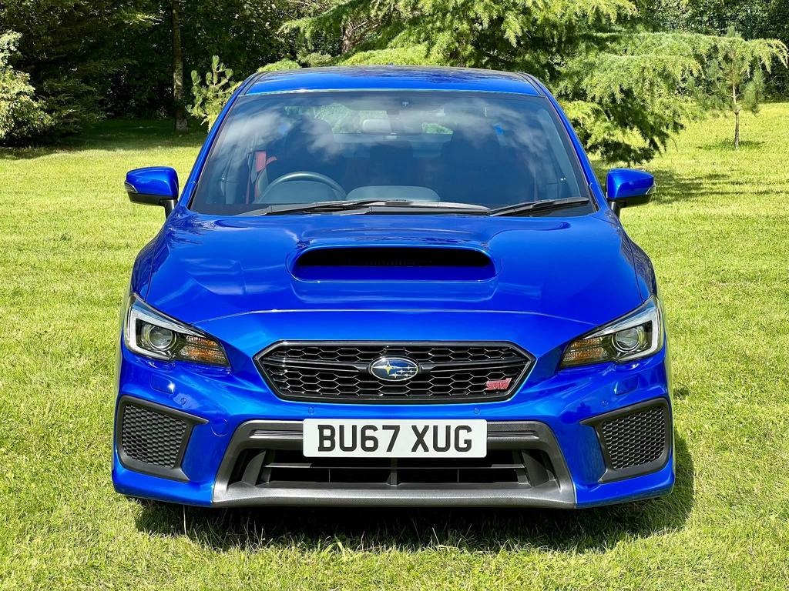

Fairly Reliable Car Sales


Subara WRX STI
2.5T Final Edition 4WD Euro 6 4dr
£44,995 | 2017 (67 reg) | Manual | Petrol
Dealer | (01234) 56789
Location: Enniskillen, 0 miles away
Description
What might rightly be considered Subaru's swan song, the WRX STI Final Edition brings to an end a near quarter-century history of rally inspired icons. Numbered 28 from a limited run of just 150 cars, this truly stunning example has covered just shy of 15,000 miles at the hands of two clearly meticulous keepers.
Overview
Spec: 495 bhp - Huge spec
Mileage: 17,988 miles
Registration: 2017 (67 reg)
Owners: 2
Fuel Type: Petrol
Engine Size: 2.5L
Body Type: Saloon
Transmission: Manual
Doors: 4
Emission Class: Euro 3